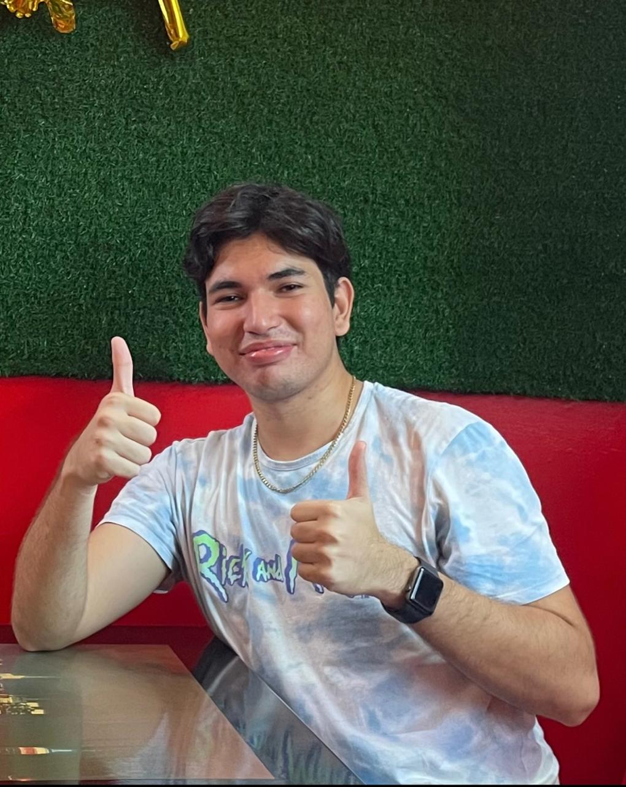

Mike Leandro Bowen Alvarez
Ingeniero en Sistemas
PERFIL
Dirección
Barrio San Rafael - La Concordia
Teléfono
0963226993
Gmail
bowenkemi@gmail.com
BIBLIOGRAFIA PERSONALExperienciaEmpresa BISUANla experiencia de una empresa de ropa en la gestión de fundas, desde su almacenamiento hasta el envío a otros lugares. Se detalla cómo las fundas se organizan en un almacén optimizado, utilizando un sistema de códigos de barras para un control eficiente del inventario. El proceso de envío incluye la selección cuidadosa de las prendas, su protección en fundas adecuadas y su empaquetado para garantizar que lleguen en perfecto estado. Además, se mencionan los desafíos enfrentados, como evitar daños durante el transporte y optimizar el tiempo de procesamiento, y las soluciones implementadas para mejorar la eficiencia y la satisfacción del cliente. |
EducaciónUniversidad Tecnica Luis Vargas TorresIngeniería en Sistemas |
Redes Sociales |